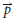
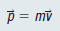
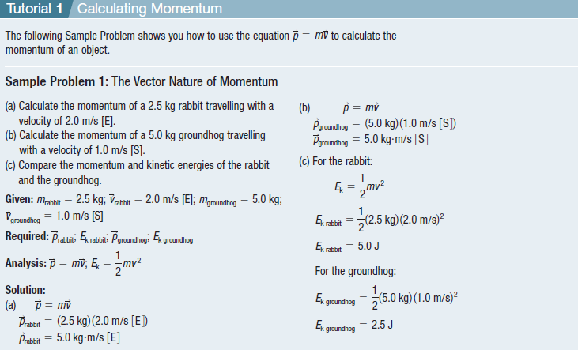
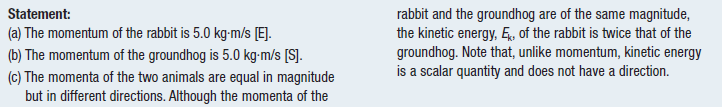
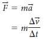
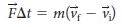
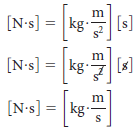
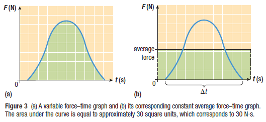
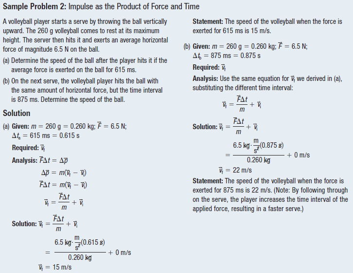
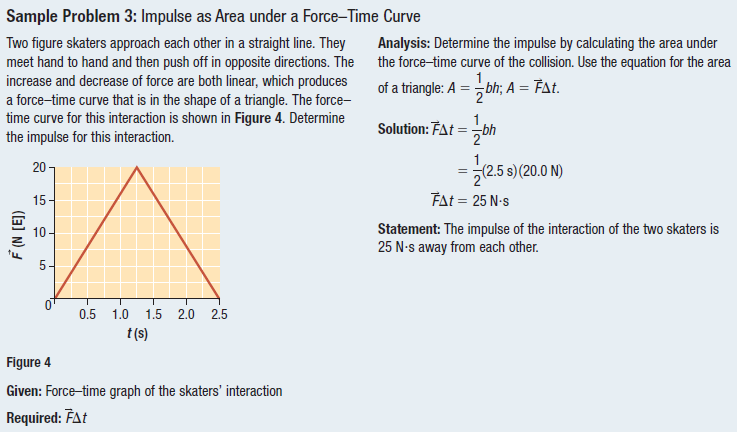

Momentum and Impulse
To fully understand momentum and impulse, you can watch this video.
Momentum and Impulse
Momentum is a physics term; it refers to the quantity of motion that an object has. A sports team that is on the move has the momentum. If an object is in motion (on the move) then it has momentum.

Impulse is a term that quantifies the overall effect of a force acting over time. It is conventionally given the symbol J start text, J, end text and expressed in Newton-seconds.

Momentum
Linear momentum (  ) is a quantity that describes the motion of an object traveling
in a straight line as the product of its mass and velocity.

Note that for the rest of this section, the term momentum refers to linear momentum. The momentum p of an object is directly proportional to the object’s velocity, so the momentum vector is in the same direction as the velocity. Note also that p is proportional to the mass of the object.


Impulse
These concepts are merely an outgrowth of Newton's second law as discussed in an earlier unit. Newton's second law (Fnet = m • a), when combined with the definition of acceleration (a = change in velocity/time), the following equalities result.

If both sides of the above equation are multiplied by the quantity t, a new equation results.

Dimensional analysis shows that the SI units for impulse (newton seconds, or N•s) are the same as the units for momentum (kg•m/s):

Impulse in Sports
Assume the mass of the tennis ball is still the same; if its velocity is greater, its momentum must also be greater. So the tennis player is providing a greater impulse, or change in momentum, to the ball.
Impulse and Force–Time Graphs
A force–time graph shows force as a function of time during a collision within a time interval 🔺t.



Practice
Solve this.
- What is the average momentum of a 50kg runner who covers 500m in 60s?
- How fast is a player moving if he has a momentum of 4000 kg m/s and a mass of 100kg?
- Calculate the impulse of a ball that hits the ground with a force of 50N over a time frame of .1 second.